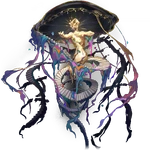

Mythus
Aeon of EnigmataLore
Mythus adalah Aeon yang memimpin Path of Enigmata (Jalur Misteri), mewakili kebohongan, rahasia, kabut pengetahuan, dan penolakan terhadap kebenaran mutlak. THEY adalah "The Enigmata" yang sengaja menyebarkan kekacauan informasi, membuat segala pengetahuan menjadi kabur, ambigu, dan tak bisa dipercaya sepenuhnya.
Mythus adalah musuh bebuyutan Nous (Aeon of Erudition), karena Nous mencari kebenaran absolut sementara Mythus berusaha menyembunyikan dan mengaburkannya. Mereka sering mengirimkan "Mist" atau kabut misterius yang membuat fakta menjadi mitos, dan mitos menjadi fakta — sehingga Genius Society dan IPC sering kesulitan membedakan mana yang benar.
Mythus tidak punya tujuan destruktif seperti Nanook atau ekspansif seperti Yaoshi — tujuan mereka hanyalah menjaga agar alam semesta tetap "misterius" selamanya. Dalam Simulated Universe, Mythus sering muncul sebagai entitas yang mengubah data dan informasi secara acak, membuat eksperimen menjadi tidak bisa diandalkan.
Nama "Mythus" berasal dari "myth" (mitos) + "thus" (demikian), melambangkan "demikianlah mitos tercipta". Pronoun: THEY/THEM. Quote ikonik: "Truth is but a shadow cast by lies. Let the mist conceal all." — Fragmen lore Enigmata.
Emanator
Emanator Enigmata disebut **History Fictionologists** atau individu yang diberi kekuatan untuk mengubah, menyembunyikan, atau menciptakan sejarah palsu. Mereka bisa memanipulasi memori kolektif, membuat fakta menjadi fiksi, dan fiksi menjadi sejarah yang diterima luas.
Emanator terkenal:
- Fables About the Stars — kelompok utama History Fictionologists yang menulis dan menyebarkan "sejarah alternatif" untuk mengaburkan kebenaran tentang Aeon dan peristiwa kosmik.
- Mr. Recoleta — salah satu anggota terkenal yang mampu menulis ulang memori individu atau bahkan planet.
Tidak seperti Emanator lain yang kuat secara fisik, Emanator Mythus lebih berbahaya karena kekuatan mereka bersifat informasional — mereka bisa menghancurkan kepercayaan dan pengetahuan tanpa kekerasan langsung.
Penampilan
Mythus muncul sebagai sosok yang selalu diselimuti kabut tebal dan bayangan yang berubah-ubah. Bentuk mereka tidak pernah jelas — kadang seperti siluet humanoid dengan banyak mata yang berkedip, kadang seperti kabut yang membentuk wajah-wajah palsu.
Tubuh mereka sering terlihat seperti buku terbuka yang halamannya berubah sendiri, atau seperti cermin retak yang memantulkan versi palsu dari siapa pun yang melihatnya. Mata mereka (jika terlihat) adalah warna neon biru yang samar, selalu berkedip dan menghilang.
Aura Mythus adalah kabut ungu gelap dengan kilau neon samar, menciptakan rasa bingung dan ketidakpastian. Suara mereka adalah bisikan yang kontradiktif — satu kalimat terdengar benar, tapi segera dibantah oleh bisikan berikutnya.